Original:
3 dB:
6 dB:
9 dB:
12 dB:
20 dB:
50 dB:
-20 dB:
private static void amplificate(int db) {
double a = Math.pow(10.0, (double) db / 20.0);
System.out.println("a: " + a);
for (int i = 0; i < samples; i++) {
float f_sound = readWavFile.sound[i];
f_sound *= a;
if (f_sound > Short.MAX_VALUE) {
f_sound = Short.MAX_VALUE;
} else if (f_sound Short.MIN_VALUE) {
f_sound = Short.MIN_VALUE;
}
readWavFile.sound[i] = (short) f_sound;
}
}
Eine Verzerrung ist bis 12 noch nicht wahrnehmbar, aber ab spätestens 20dB ist diese wahrnehmbar.
3 dB:
6 dB:
9 dB:
12 dB:
Sinus verstärkt um 3 dB:
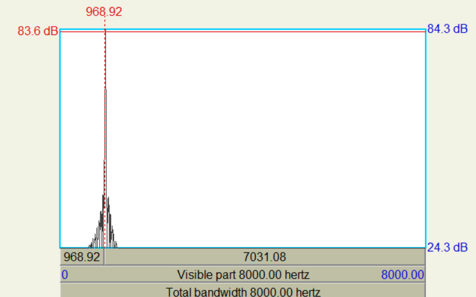Sinus verstärkt um 6 dB:
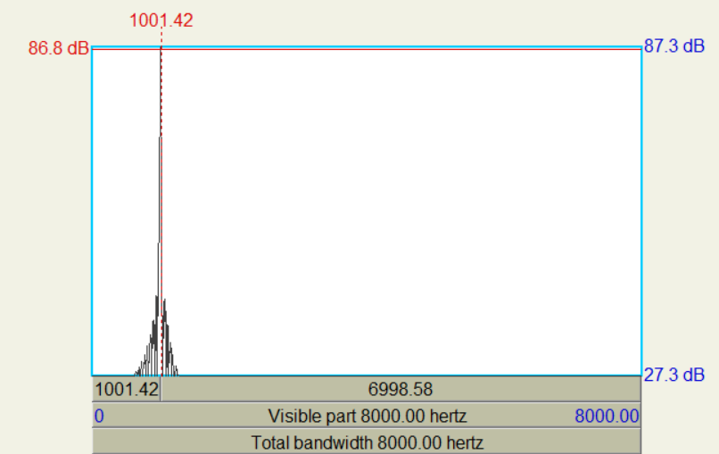Sinus verstärkt um 9 dB:
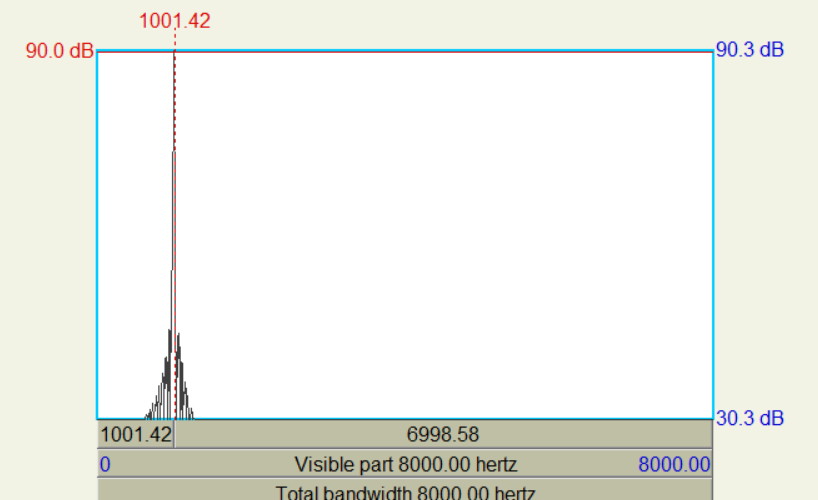Sinus verstärkt um 12 dB:
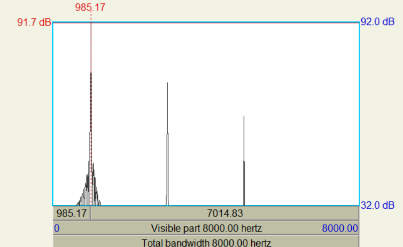Sinus verstärkt um 12 dB:
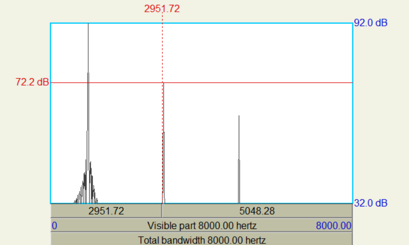Sinus verstärkt um 12 dB:
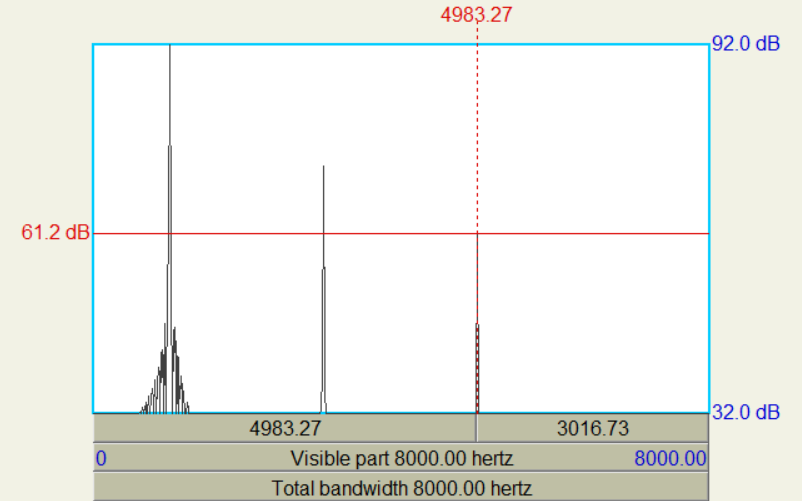| Verstärung in dB | Frequenz | Amplitude | Summe der Potenzen ab Index 1 | Summe der Potenzen ab Index 2 | Wurzel der Division |
| 3 | 1000 | 84.3 | 7106.49 | 0 | 0 |
| 6 | 1000 | 87.3 | 7621.29 | 0 | 0 |
| 9 | 1000 | 90.3 | 8154.09 | 0 | 0 |
| 12 | 1000 | 92 | 17369 | 8905 | 0.716027256 |
| 2950 | 72 | ||||
| 4983 | 61 |
Damit sehen wir, dass es nur für den Sinus, welcher um 12 dB verstärkt wird, einen Klirrfaktor gibt, welcher 0.716 beträgt.
N = Δt * fa
10ms: N = 0.01s * 44100 = 441
100ms: N = 0.1s * 44100 = 4410
200ms: N = 0.2s * 44100 = 8820
Wenn man 2 Kanäle hat, dann müsste N = 2N sein.
Funktion zur Echo Generierung:
private static void echo(int ms, double factor) {
int indicies = (int) (((double) ms / 1000.0) * sampleRate * numChannels);
System.out.println("indicies: " + indicies);
numFrames += indicies / numChannels;
int new_samples = samples + indicies;
short[] echo_sound = new short[new_samples];
for (int i = 0; i < new_samples; i++) {
// ********* Done ***************
double add = 0;
if (i < indicies && i < samples) {
add = readWavFile.sound[i];
}
else if (i < samples) {
add = readWavFile.sound[i] + readWavFile.sound[i - indicies] * factor;
}
else if (i >= indicies) {
add = readWavFile.sound[i - indicies] * factor;
}
if (add > Short.MAX_VALUE) {
add = Short.MAX_VALUE;
} else if (add < Short.MIN_VALUE) {
add = Short.MIN_VALUE;
}
echo_sound[i] = (short) (add / (1 + factor));
}
readWavFile.sound = echo_sound;
}
Original von Musik:
10 ms:
100 ms:
200 ms:
Original von Sprache:
10 ms:
100 ms:
200 ms:
private static void filter_n() {
for (int i = samples - 1; i >= 0; i--) {
double f_sound = 0;
if (i > 0) {
f_sound = readWavFile.sound[i] * 0.5 - readWavFile.sound[i-1] * 0.45;
}
readWavFile.sound[i] = (short) f_sound;
}
}
private static void filter_p() {
for (int i = samples - 1; i >= 0; i--) {
double f_sound = 0;
if (i > 0) {
f_sound = readWavFile.sound[i] * 0.5 + readWavFile.sound[i-1] * 0.45;
}
readWavFile.sound[i] = (short) f_sound;
}
}
Original Musik:
Hochpass Musik:
Tiefpass Musik:
Original White Noise:
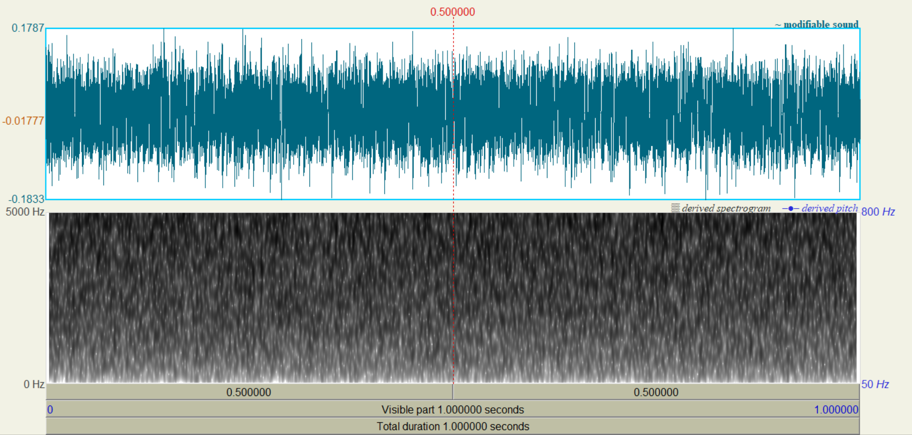 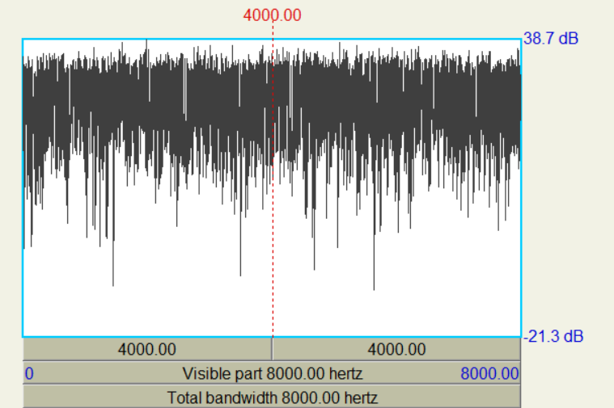Hochpass White Noise:
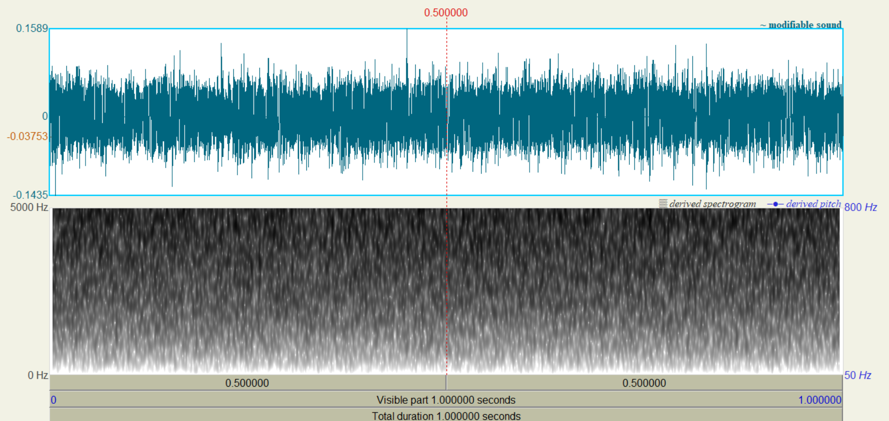 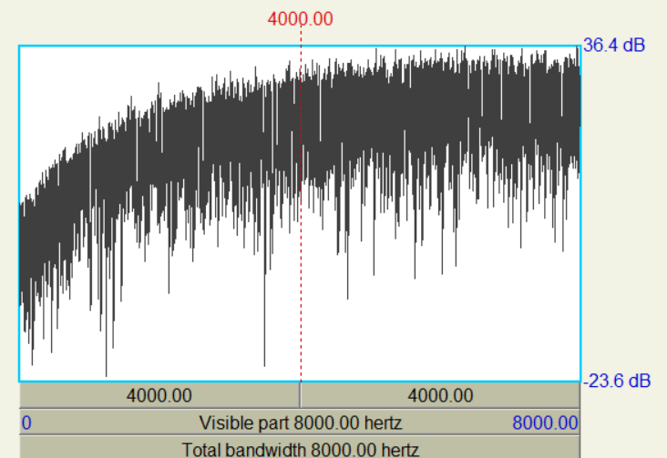Tiefpass White Noise:
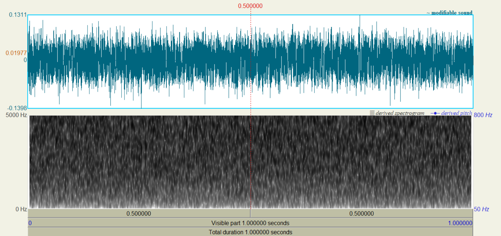 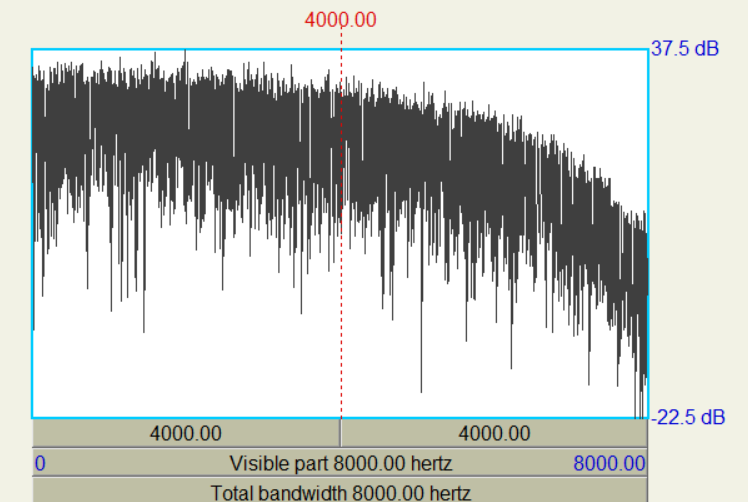